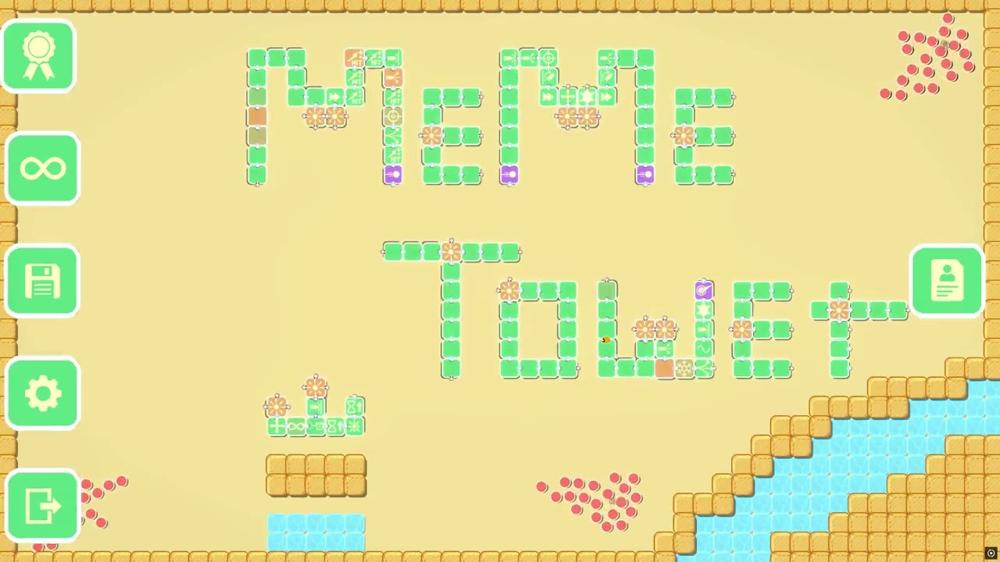
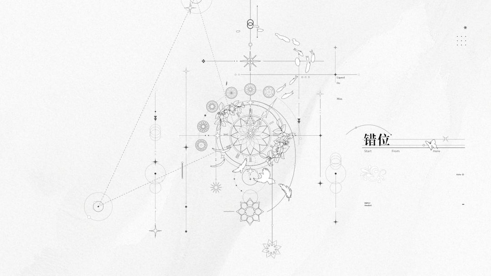
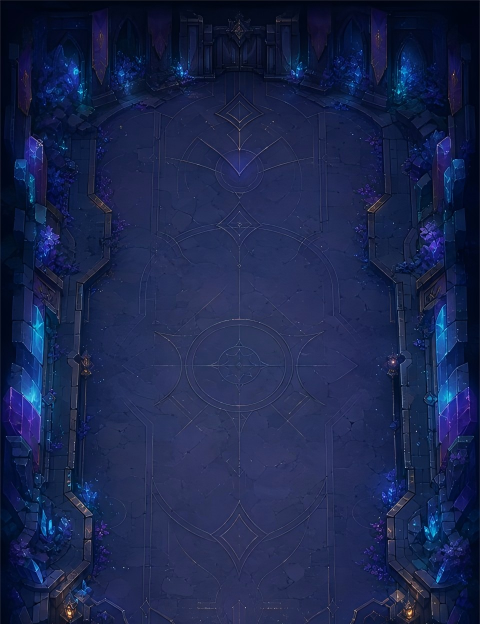
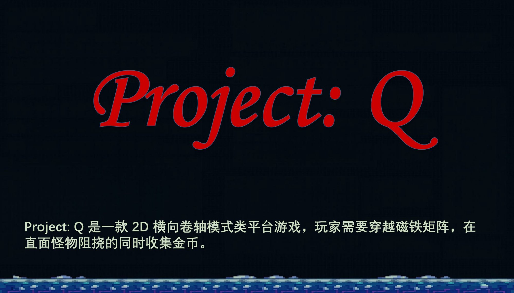

博物馆+放大缩小 关卡白盒
核心体验：在博物馆空间中完成自身放大/缩小解谜，并在关底通过Boss战完成节奏收束。
聚焦博物馆场景里的关卡解谜与Boss战设计，通过空间探索、信息引导与阶段挑战，验证关卡逻辑与体验连贯性。
以体验目标驱动关卡设计，以AI工具加速设计生产力。
Northeastern University · Game Science and Design 硕士在读
以终为始——从最终的玩家体验倒推每一个设计决策。
一切从体验出发——不为机制而机制，每条动线、每个节奏点都服务于玩家的核心感受。
严格执行——一旦锁定体验目标，一切设计决策都严格为这个目标服务，反复打磨直到实现，绝不偏离。
基于这套哲学，我构建了「三线协同的关卡白盒框架」作为我的核心设计方法论——
以故事线明确标志性时刻，以空间线搭建可游玩舞台，以玩法线拆分并投放可验证的玩法 clips，让三条线在同一关卡中协同产出、互相驱动。
对我来说，关卡策划的本质是在空间中讲好一个故事。
白盒做得越具体，设计意图就越清晰，下游协作者就越容易理解并继续创造；当空间、玩法、叙事融合到足够有机，团队就会从“被动执行”转向“主动思考”，共同把设计推到更高完成度。
查看方法论全文 →


TapTap 聚光灯 GameJam 21 天限时创作项目。作为策划参与核心体验拆解、道具解谜流程、行动点限制与阶段节奏设计， 将“你确定这是BUG？”的主题转化为文字线索、房间探索和玩家认知偏差之间的推理体验。
查看TapTap页面
受《世界弹射物语》启发的 20 房 Roguelike 原型。完成角色编队、49 张在池碎片、多流派资源循环、局外解锁与上下文新手教学，并将完整试玩与系统资源流整合到项目页。
进入项目并试玩
以磁铁互动机制为核心的探索解谜游戏。从2D横版到3D箱庭的完整迭代路径： 基于Tilemap精细构建关卡动线，整合数据分析与可视化， 通过用户反馈持续调整难度曲线与空间体验。
查看项目详情核心体验：在博物馆空间中完成自身放大/缩小解谜，并在关底通过Boss战完成节奏收束。
聚焦博物馆场景里的关卡解谜与Boss战设计，通过空间探索、信息引导与阶段挑战，验证关卡逻辑与体验连贯性。
核心体验：在压迫的流水线工厂中用冰块解谜与战斗，以一记超巨型冰块终结Boss，解放族人。
冰主题线性解谜关卡白盒（Unity）。完整呈现三线协同产出法、热能三档状态机、冰力值系统与原子化规则R1–R21，含两关教学递进与两阶段Boss战。
核心体验：以飞镖投掷/召回机制构建Boss战，通过高压对抗与阶段变化形成战斗叙事。
聚焦以飞镖机制为基础的Boss战设计与三线协同，通过空间编排说明“角色正在发生什么事情”，并持续验证机制与叙事是否共同成立。
查看项目偏向“我如何做设计”的系统性思考：关卡、叙事、玩法系统和策划职责的抽象方法。
偏向“我如何理解别人的作品”：从已有游戏中提炼空间、系统、节奏和玩家体验的设计规律。
偏向“我如何积累题材与空间语汇”：把历史、宗教、建筑与时代变化转化为可供设计调用的素材库。
覆盖RPG、FPS、动作、开放世界等多品类设计研究
游戏策划最痛苦的，往往不是没有创意，而是已经看见了那个瞬间，却还没有办法玩到它。 一个画面要先变成文档、需求和等待；等它终于能够游玩，我们讨论的可能只剩下“功能有没有完成”，而不是“玩家有没有感受到它”。
我希望创意还带着温度时，
它就已经可以被试玩。
我提出的起点通常不是功能，而是一种玩家感受：开启轮回眼后，飞来的火球凝固在空中，玩家仍能自由行动——我要的是“像神一样”的掌控感。
AI 帮助我继续追问：玩家为什么不能一直使用？高速威胁被放慢后，游戏是在降低难度，还是把操作压力转化成更从容的策略判断？模糊的幻想因此逐渐变成可以讨论、可以取舍的设计规则。
在《冰 × 工业》的第一关，我先让玩家建立一个安全直觉：锤打机是会把冰块击飞的障碍，把它降温冻结，通路就安全了。
到第二关，我没有继续发明机关，而是与 AI 重新排列冰块、传送带、锤打机和冻结已经拥有的规则：冻结错误朝向的锤打机，保留正确的那一台，再借它把冰块击向墙体。原本需要避开的危险，就这样变成了主动利用的工具。
“一百只缓慢下落的怪物会不会有割草感？”“S 型激光扫五秒会形成压迫，还是只显得漫长？”这些问题无法在文档里得到答案。
我让 AI 先做一个只回答当前问题的验证场景，暂时不追求完整关卡。亲手试玩后，我描述具体的不适；AI 协助定位原因、开放关键参数，再把受击来源、通关时间和构筑变化变成可观察的证据。